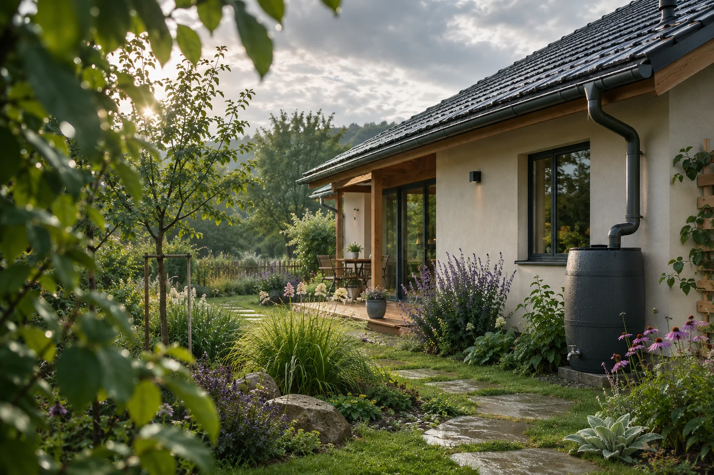
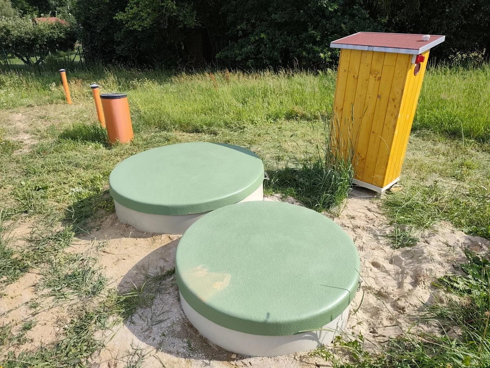
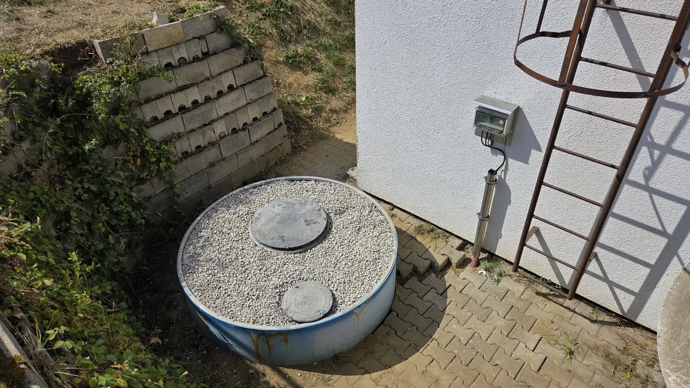
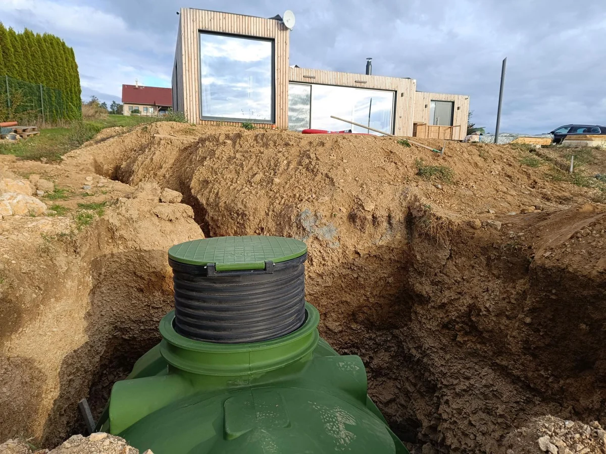
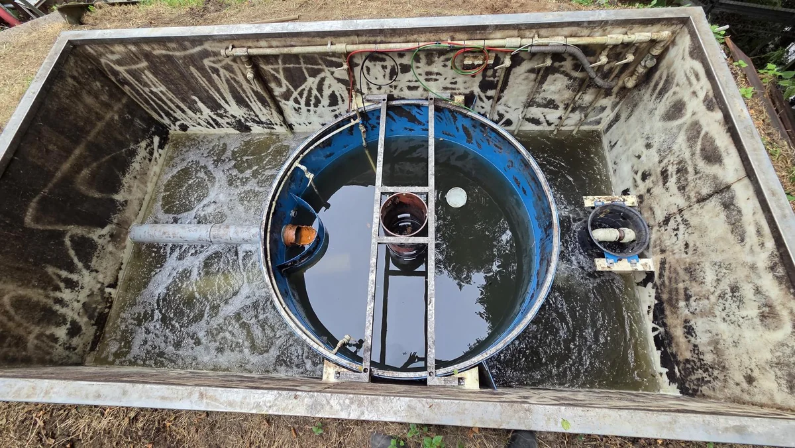
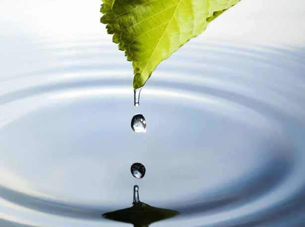

01 / UVEDENÍ DO PROVOZU
Zprovoznění ČOV
Kontrola instalace, funkčnosti a biologického procesu. Nastavení technologie, zprovoznění a předávací protokol. Podle technologie také u jiných výrobců.
Jak probíhá zprovoznění Poptat zprovoznění ↗TECHNOLOGIE. PROVOZ. PÉČE.
Od prvního návrhu po každodenní provoz.
Nová čistírna, servis stávající technologie i voda pro zahradu. Pomáháme domácnostem, komerčním a průmyslovým provozům i obcím.
Rodinná firma z TáboraProjektujeme. Realizujeme. Staráme se.

Pro domov, kde voda dává smysl.Každá kapkaPRO KOHO TU JSME
SERVIS JE JEDNA Z NAŠICH HLAVNÍCH ČINNOSTÍ
Pravidelná údržba, jednorázová oprava i dlouhodobá servisní smlouva. Pro domovní, komerční i průmyslové čistírny různých výrobců.
Servisujeme také čistírny,
které jsme sami nedodávali.
Z NAŠICH SERVISNÍCH ZAKÁZEK
Dívčí Kámen · servis čistírny odpadních vod
Chotoviny · servis čistírny odpadních vod
Od penzionu po výrobní provoz.
Rozsah péče přizpůsobíme konkrétní technologii.
01 / NAŠE ŘEŠENÍ
Domácnost, firma, obec i stávající technologie.
Vyberte oblast, kterou právě řešíte.

Z NAŠÍ REALIZACE01 / DOMOVNÍ ČISTÍRNY
Nový dům nebo chalupa bez kanalizace? Navrhneme čistírnu podle provozu domácnosti, pozemku a možností odvádění vyčištěné vody.
Technologie a projektová dokumentace podle místních podmínek.
Dodávka, montáž, zprovoznění a vysvětlení obsluhy.
Servis a údržba pro další provoz vaší čistírny.

Z NAŠÍ REALIZACE02 / FIRMY A OBCE
Čistírny pro penziony, hotely, rekreační a výrobní areály i obce. Technologii a rozsah dodávky navrhneme podle potřeb konkrétního provozu.
Posouzení zadání, projektová příprava a návrh technologie.
Technologické celky, úprava vod a intenzifikace stávajících ČOV.
Činnosti zajišťujeme vlastními kapacitami nebo ve spolupráci se specialisty.

Z NAŠÍ REALIZACE04 / DEŠŤOVÁ VODA
Dešťová voda může sloužit k zálivce i vybraným potřebám domácnosti. Společně vybereme nádrž, čerpání a rozvody podle toho, jak ji chcete využívat.
Zohledníme střechu, plánované využití a podmínky pozemku.
Navážeme čerpáním a vhodnými rozvody.
Součástí návrhu je také řešení přebytečné vody.
05 / ČERPACÍ TECHNIKA
Když voda nemůže odtékat sama, pomůže správně navržené čerpání. Přizpůsobíme technologii terénu, trase potrubí i provozu objektu.
Začneme podmínkami místa a možnostmi napojení.
Propojíme šachtu, čerpání a potřebné rozvody.
Nastavíme provoz a zajistíme následnou údržbu.

Z NAŠÍ REALIZACE03 / SERVIS A ÚDRŽBA
Přestal systém fungovat, jak má? Zajišťujeme diagnostiku, opravy i pravidelnou péči o domovní a větší ČOV různých výrobců — včetně těch, které jsme sami nedodávali.
Pomůže typ zařízení, jeho stáří a popis problému.
Údržba, výměna komponentů nebo návrh rekonstrukce podle skutečného stavu.
Nastavení provozu, doporučení pro obsluhu i možnost dlouhodobé servisní smlouvy.
OD INSTALACE K DOBRÉMU PROVOZU
Někdy pomůže správné nastavení. Jindy zaškolení obsluhy nebo obnova technologie. Každou službu můžete poptat samostatně.
01 / UVEDENÍ DO PROVOZU
Kontrola instalace, funkčnosti a biologického procesu. Nastavení technologie, zprovoznění a předávací protokol. Podle technologie také u jiných výrobců.
Jak probíhá zprovoznění Poptat zprovoznění ↗02 / JISTOTA PŘI OBSLUZE
Praktické zaškolení přímo u zařízení. Pravidelné kontroly, údržba a základní diagnostika pro soukromé zákazníky, firmy i obce.
Co se při školení naučíte Poptat školení ↗03 / DALŠÍ ŽIVOT TECHNOLOGIE
Posoudíme stávající stav. Navrhneme úpravu, doplnění, výměnu technologie nebo intenzifikaci podle potřeb vašeho zařízení.
Možnosti modernizace Probrat rekonstrukci ↗MALÁ ZMĚNA. DOBRÝ SMĚR.
Ze střechy do nádrže. Z nádrže zpátky do zahrady. Navrhneme způsob využití dešťové vody podle toho, co váš dům a pozemek potřebují.
Jak využít dešťovku
02 / Z NAŠÍ PRÁCE
Skutečné projekty. Skutečné fotografie.
Podívejte se, co jsme společně vyřešili.
Čistírna BC 4 COMFORT DUO s pískovým filtrem.
Nádrž Roterra 3500 L s čerpadlem pro zahradu.
Přestavba původní ČOV a napojení na kanalizaci.
Nová technologie při zachování původní konstrukce.

 Osobně.
Osobně.03 / LIDÉ ZA ŘEŠENÍM
Jsme rodinná firma z Tábora. Spojujeme projektování, realizaci a servis — abyste měli na koho se obrátit v každé fázi.
Nejdřív posloucháme. Potom navrhujeme. Pro domácnosti, firmy i obce zajišťujeme řešení vlastními kapacitami nebo ve spolupráci s odbornými partnery.
Pojďme se poznatZKUŠENOST PROJEKTOVÉHO PARTNERA
Se společností Čistá řešení dlouhodobě spolupracujeme, realizují námi vyprojektované záměry v oblasti vodohospodářských staveb, především s důrazem na čištění odpadních vod. Naši zákazníci si chválí především jejich časovou flexibilitu, seriózní a profesionální přístup a poctivou poprodejní péči – která je dle mého názoru v našem oboru jednou z nejdůležitějších hodnot. Určitě doporučuji všem zájemcům o kvalitní služby.
04 / KROK ZA KROKEM
Od první otázky k hotovému řešení.
Srozumitelně, v návaznosti, s jedním týmem.
Dům, areál či obec. Současný stav a vaše očekávání.
Technologie, dokumentace a postup realizace.
Montáž, zprovoznění a vysvětlení obsluhy.
Údržba, servis a pomoc, když ji potřebujete.
Vůbec ne. Popište nám, co řešíte, a uveďte obec, kde se pozemek nachází. Při úvodní konzultaci společně upřesníme další postup.
Ano, součástí nabídky je projektová dokumentace i zajištění povolení stavby. Konkrétní rozsah záleží na zvoleném řešení a místních podmínkách.
Ano. Servisujeme domovní, komerční i průmyslové ČOV různých výrobců, včetně zařízení, která jsme sami nedodávali. Pro první posouzení pomůže výrobce, typ zařízení, obec a stručný popis problému. Pokud výrobce ani typ neznáte, probereme to společně.
Především vhodná technologie, velikost a stav objektu, podmínky pozemku a rozsah prací. Nabídku proto sestavíme až podle konkrétního zadání.
ZAČNĚME JEDNÍM ROZHOVOREM
Nový projekt, servis nebo pomoc s provozem?
Vyberte službu a napište pár slov. Zbytek probereme společně.
Přímo s lidmi, kteří vodě rozumí.